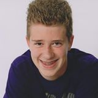

First name: Bailey
Last name prefix: van
Last name: Antwerpen
Phonenumber: 06-39110472
Place of birth: Dordrecht
Date of birth: 11th of April 1998
Age: 18 years
Living place: Zwijndrecht
My goal with this portfolio is to make it as good as I can during the first year of my education. Besides that, I also want to pass the exams for this education.
I'm not certain what I want to do after this education. One of the things that I'm thinking about of doing after this, is going to NHTV in Breda (programming games). The other thing is doing some more programming (I'm thinking about programming apps for android or mods for minecraft (both of them are in Java)) so I can become better at it. When I'm better at programming and I didn't go to NHTV, I might go to NHTV to start to learn how to program games.
What I like to do in my spare time is: watch clips on youtube and play games with my friends (my favorite game is OVERWATCH).
This is the link to my own adventure game. I hope you like it.
One of my skills is that I learn things quickly and I understand things quicker than I learn it. I have little knowledge of programming but I'm learning how to programm. This was completely new for me and I understand how it works and what to do.
I would like to learn some other programming languages for example: javascript, C# and PHP (more languages is always usefull). I'm very good at maths and I have done physics, chemistry and biology.
2016-present: Da Vinci Applicatieontwikkelaar
2013-2016: Heer Bokel College; HAVO diploma
2013-2010: Walburg College; HAVO TTO (Bilingual education)
2015-present: vakkenvuller Dirk van den Broek versafdeling
2010-2015: reclamefolderbezorger SPOTTA